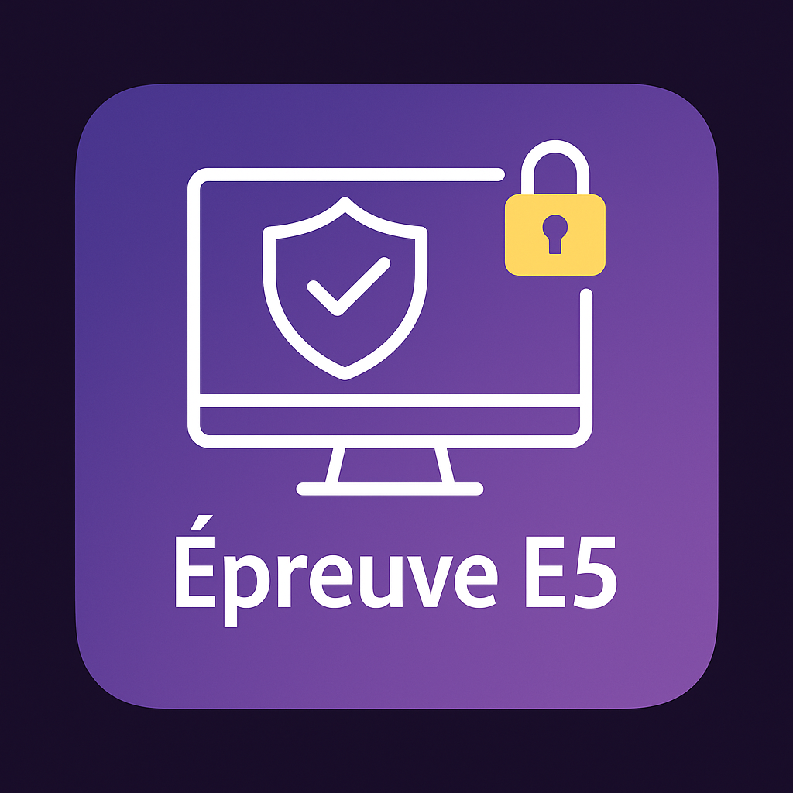
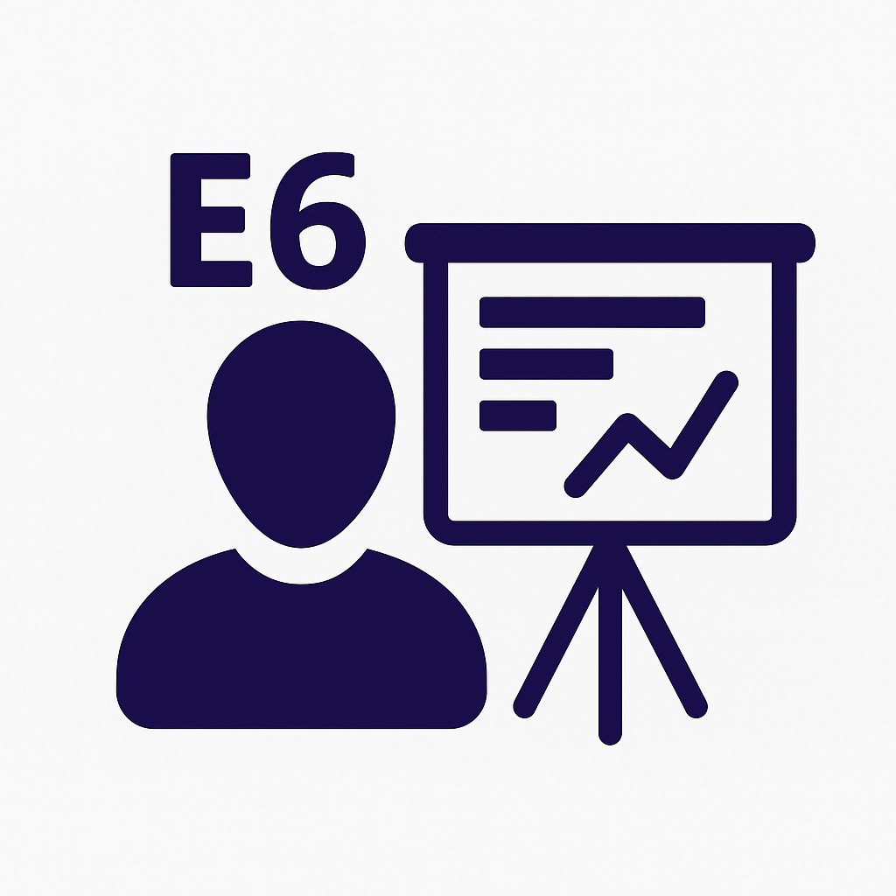

Qui suis-je ?
Je m'appelle Karesh Vallikanthan, passionné d’informatique et actuellement étudiant en BTS SIO option SISR à Paris. Je me spécialise dans l’administration des systèmes, des réseaux, la virtualisation et le développement de solutions métiers.
Curieux, rigoureux et autonome, j’aime relever les défis techniques et apprendre en continu.
À travers ce portfolio, je vous invite à découvrir mon parcours, mes expériences, ainsi que les projets professionnels et scolaires que j’ai eu l’opportunité de réaliser jusqu’à aujourd’hui.
Approche orientée solution
Face aux problèmes techniques ou organisationnels, je cherche des solutions simples, efficaces et adaptées au contexte de l’entreprise..
Compétences techniques
Je maîtrise les bases de l’administration système, la supervision et le déploiement de services informatiques.
Esprit d’équipe
Communication fluide, gestion de projet, autonomie et entraide.
Mon Parcours
ESTIAM – Paris
BTS SIO SISR – Spécialisation Infrastructure, Systèmes et Réseaux
DS Avocats – Paris
Alternant Technicien Informatique
Securinfor - RUNGIS
Stage Technicien Support Informatique
Testing SAV d'appareils HP pour AXA France
EPITECH – Le Kremlin-Bicêtre
Bachelor en ingénierie informatique
Projets : jeu vidéo, radar
Langages : C, CSFML, Python, CSS
AXIMA
Technicien Infrastructure
Lycée Évariste Galois – Sartrouville
Baccalauréat Scientifique
Compétences Professionnelles
🖧 Réseaux / Systèmes
💻 Développement / Programmation
Mes Projets
Supervision réseau avec Zabbix
Serveur Debian 12 avec agents Zabbix, alertes et suivi réseau.
Cloud privé avec Nextcloud
Infrastructure sécurisée : LDAP Samba, Netdata, sauvegarde rsync.
Serveur Linux pour GLPI
Déploiement de GLPI sous Debian : MariaDB, PHP, Apache et sécurité.
Création & Configuration d'une GPO
Déploiement de stratégies de groupe pour contrôler la sécurité et les applications sur les postes Windows.
Installation de VEEAM
Déploiement de la solution Veeam Backup & Replication pour sauvegarder des machines virtuelles avec configuration des jobs de backup, stockage et restauration.
Infrastructure AD, DNS, DHCP & Routage
Installation et configuration d’Active Directory, DNS et DHCP sur Windows Server. Mise en place du routage pour relier plusieurs sous-réseaux et segmenter le réseau.
Le Brevet de Technicien Supérieur (BTS) Services informatiques aux Organisations (SIO) s’adresse à ceux qui souhaitent se former en deux ans (niveau Bac+2) aux métiers d’administrateur réseau ou développeur. Il inclut 2 stages en entreprise.
Deux spécialités sont proposées : SISR et SLAM.
Mes Épreuves
Épreuve E5
Présentation des projets réalisés en cours et en entreprise, illustrant mes compétences en installation, configuration et sécurisation de services informatiques.
Épreuve E6
Présentation de deux projets réalisés en autonomie. L’un d’eux est choisi par le
jury
pour une analyse technique à l’oral, à partir d’un besoin exprimé le jour de l’épreuve.
-

Épreuve E5
Configuration, sécurisation et supervision d’un système d’information.
-

Épreuve E6
Présentation et analyse de projets réalisés en autonomie.
Épreuve E5 – Tableau de Synthèse
Voici le tableau de synthèse de mes compétences pour l’épreuve E5 du BTS SIO. Il présente de manière structurée les projets, compétences mobilisées et niveaux atteints.

Mon Alternance chez DS Avocats
Une expérience enrichissante au sein d’un cabinet international
DS Avocats – PARIS
J’ai intégré l’équipe informatique de DS Avocats, un cabinet juridique international, en tant qu’alternant technicien informatique. Durant cette période, j’ai participé activement au support utilisateur, à la gestion des comptes Active Directory, au déploiement et à la maintenance du parc informatique, tout en assurant un suivi documentaire rigoureux.
Cette immersion m’a permis de développer ma réactivité, ma rigueur, ainsi qu’un excellent relationnel avec les équipes métiers.
Organisation de l’équipe SI
Mes activités en image
Gestion des serveurs via vSphere et Citrix Cloud
Configuration des postes utilisateurs via un switch réseau et Création de compte utilisateur
Support à distance avec TeamViewer et gestion des sessions Citrix DaaS
Intervention technique sur baie réseau : câblage et vérification des switchs
Veille Technologique – Informatique Quantique
Ma méthode de veille technologique
Pour mener ma veille technologique, j’ai utilisé plusieurs outils numériques afin de rester informé de façon fluide. J’ai notamment exploité Feedly, un lecteur de flux RSS qui centralise les dernières actualités selon mes thématiques. Les réseaux sociaux m’ont aussi permis de suivre les publications de spécialistes et de découvrir des contenus enrichissants.
Enfin, les vidéos du créateur Dr Nozman, notamment celles sur la physique quantique, m’ont apporté une approche ludique et visuelle pour mieux comprendre les enjeux scientifiques liés à l’informatique quantique.
Grâce à cette approche variée, j’ai pu construire une veille structurée autour de la cybersécurité et des défis qu’elle devra relever face aux nouvelles technologies.
Ordinateur Classique
Fonctionne avec des bits : 0 ou 1.

Ordinateur Quantique
Fonctionne avec des qubits : 0, 1 ou les deux en même temps.
Deux grands phénomènes de l’informatique quantique :
Superposition
Un qubit peut être à la fois 0 et 1 en même temps.
Intrication
Deux qubits sont liés : modifier l’un, modifie instantanément l’autre.
Applications concrètes de l'informatique quantique
🔒 Cybersécurité
IBM développe des systèmes de chiffrement résistants aux ordinateurs quantiques.
🚗 Mobilité
Volkswagen optimise les flux de circulation en ville grâce au calcul quantique.
🧪 Santé
Biogen utilise le quantique pour accélérer la recherche de traitements contre l’Alzheimer.
💰 Finance
JPMorgan simule des risques financiers avec une précision inégalée.
⚠️ Une menace pour nos protections actuelles
Les ordinateurs quantiques ne sont pas qu'une révolution scientifique : ce sont aussi une menace directe pour notre cybersécurité.
🔓 Chiffrement classique
Les clés RSA, ECC ou DSA, aujourd’hui utilisées partout, peuvent être cassées par l’algorithme de Shor.
🛡️ Chiffrement post-quantique
Des solutions comme Kyber ou Dilithium sont conçues pour résister aux attaques quantiques.
👉 Il est essentiel d’anticiper la transition vers des protocoles post-quantiques pour protéger nos données.
🕵️♂️ Le message quantique… qu’on ne peut pas voler
En cryptographie quantique, si un espion tente de lire le message, il le modifie sans le vouloir… et donc, on le repère immédiatement.